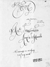
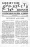
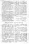
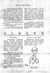
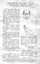
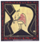
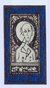

Andrei Bely 125 years
Andrei Bely
1880-2005
125 years
In celebration of the 125th anniversary of the birth of Boris Bugaev (Andrei Bely) I have assembled a small gift of items for students and scholars. They include a copy of the very rare Bulletin of the House of Arts published in Berlin in 1922, color copies of drawings-one a self portrait of Bely, another by Aleksei Remizov, and a copy of Bely's certificate for Remziov's Simian Chamber. I have also enclosed links to my paper on Bely and Remizov along with the bibliography. I include a map of Bely's Russian Berlin for the curious. Four articles highlight Bely's life in Berlin: Bely in Berlin (one, two, three); one on Glossolalia, one on Bely's Posle razluki and Marina Tsvetaeva, and one on the House of the Arts Bulletins.
 |
 |
 |
 |
 |
| Remizov to Bacherac | Bulletin p. 1 | Bulletin p.2 | Bulletin p.3 | Bulletin p. 4 |
 |
 |
| Remizov Portrait of Bely | Bely Self Portrait |
Bely's Simian Society Certificate |
Bely's Simian Society Certificate |
Bely in Berlin by Belkin |
Remizov in Berlin by Belkin
|